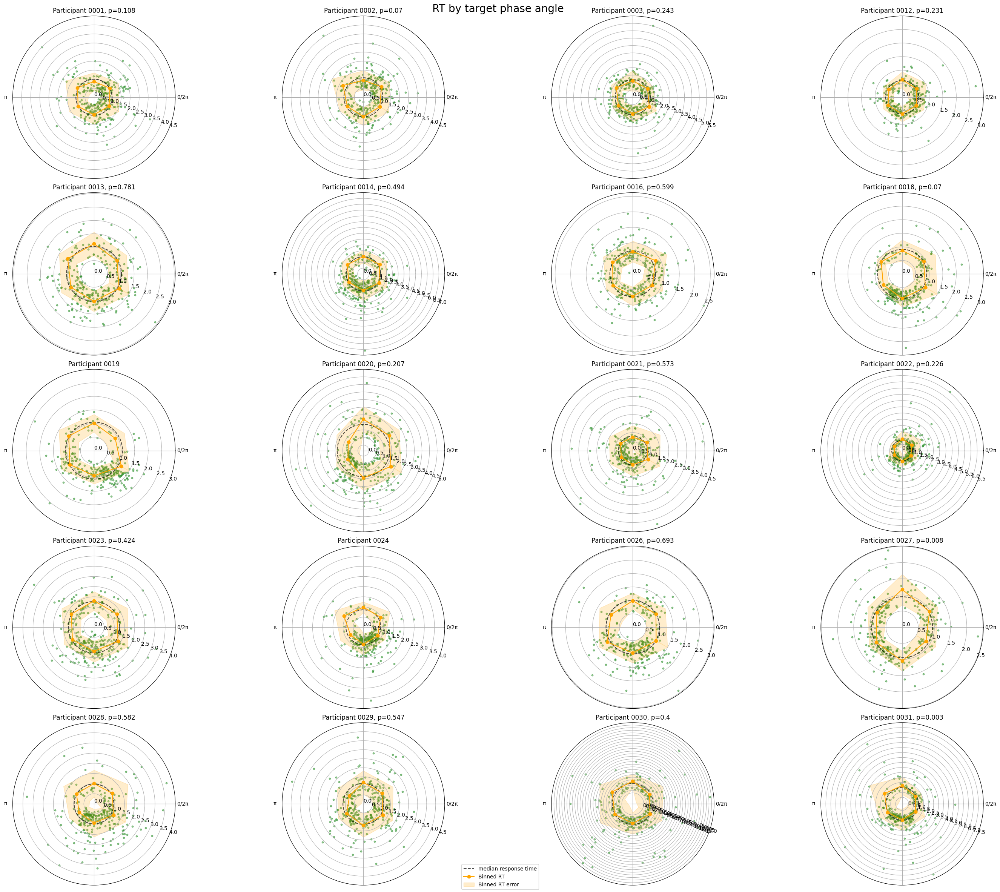
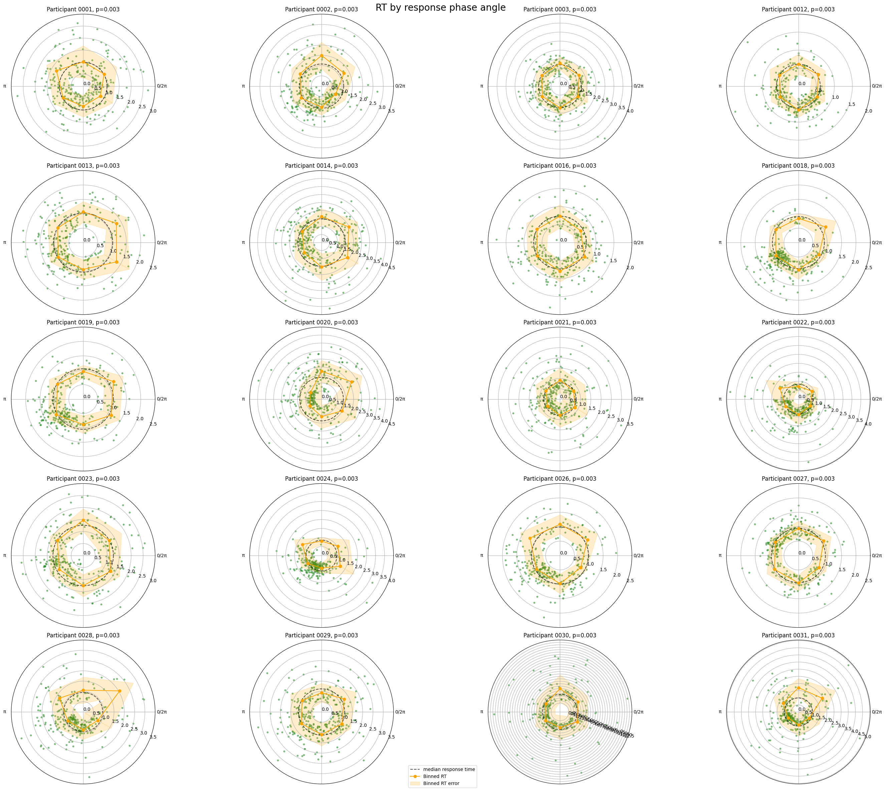

Test association with behavioural variable such as reaction time#
This notebook runs permutation tests to see whether there is a statistically significant relationship between the phase angle at which a target stimulus was presented and the response was given by the participant. The analysis is done for each participant separately, and the results are visualised in polar plots.
[1]:
import pickle
import numpy as np
from pathlib import Path
from pyriodic.permutation import permutation_test_phase_modulation
from pyriodic.viz import CircPlot
from pyriodic import Circular
import matplotlib.pyplot as plt
[2]:
# defining some constants
num_bins = 6
stat = "median"
filter_outliers = True
subj_ids = ["0001", "0002", "0003", "0012", "0013", "0014", "0016", "0018", "0019",
"0020", "0021", "0022", "0023", "0024", "0026", "0027", "0028", "0029",
"0030", "0031"]
data_path = Path("../../data/respiration/intermediate")
sfreq = 300 # Hz
Single level analysis for all participants#
[ ]:
# defining some helper functions
def binned_stats(phase_angles, var, n_bins=10, stat="mean"):
"""
Calculate binned statistics for response times.
Parameters:
rt (array-like): Response times.
n_bins (int): Number of bins to use.
stat (str): Statistic to calculate ('mean' or 'median').
Returns:
bin_centers (array): Centers of the bins.
avg_response_times (array): Average response times in each bin.
std_response_times (array): Standard deviation of response times in each bin.
"""
bin_edges = np.linspace(0, 2 * np.pi, n_bins + 1)
bin_centers = (bin_edges[:-1] + bin_edges[1:]) / 2
avg_response_times = np.zeros(n_bins+1)
std_response_times = np.zeros(n_bins+1)
for i in range(n_bins):
bin_mask = (phase_angles >= bin_edges[i]) & (phase_angles < bin_edges[i + 1])
if stat == "mean":
avg_response_times[i] = np.mean(var[bin_mask]) if np.any(bin_mask) else np.nan
elif stat == "median":
avg_response_times[i] = np.median(var[bin_mask]) if np.any(bin_mask) else np.nan
else:
raise ValueError("stat must be 'mean' or 'median'")
# Ensure the last two dots are connected
std_response_times[i] = np.std(var[bin_mask]) if np.any(bin_mask) else np.nan
# Ensure the last two dots are connected
avg_response_times[-1] = avg_response_times[0]
std_response_times[-1] = std_response_times[0]
bin_centers = np.concatenate((bin_centers, [bin_centers[0]]))
return bin_centers, avg_response_times, std_response_times
Association between reaction time and phase angle at the time of target presentation#
[4]:
n_rows = len(subj_ids) // 4
n_cols = 4
fig, axes = plt.subplots(n_rows, n_cols, figsize=(n_rows * 6, n_cols * 6), subplot_kw={"projection": "polar"})
for subj_id, ax in zip(subj_ids, axes.flatten()):
file_path = data_path / f"participant_{subj_id}_preproc.pkl"
with open(file_path, 'rb') as f:
data = pickle.load(f)
circ = data["circ"]
rejected_indices = np.array(data["rejected_indices"])
event_samples = data["event_samples"]
event_samples = event_samples[~np.isin(event_samples, rejected_indices)]
labels = circ.labels
# FIND ALL THE TARGET EVENTS AND CALCULATE THEIR RESPONSE TIMES BY THE EVENT SAMPLES
response_times = []
idx_target = [i for i, label in enumerate(labels) if "target" in label]
for idx in idx_target:
target_sample = event_samples[idx]
# Check that the label of the next event is "response"
if "response" not in labels[idx + 1]:
response_times.append(np.nan)
continue
response_sample = event_samples[idx + 1]
resp_time = (response_sample - target_sample) / sfreq # convert to seconds
response_times.append(resp_time)
targets = circ["target"].data
targets = targets[~np.isnan(response_times)]
response_times = np.array(response_times)[~np.isnan(response_times)]
if filter_outliers:
# Filter out outliers by standard deviation
upper_bound = np.mean(response_times) + 5 * np.std(response_times)
lower_bound = np.mean(response_times) - 5 * np.std(response_times)
# Filter out outliers
filtered_indices = np.where((response_times >= lower_bound) & (response_times <= upper_bound))
targets = targets[filtered_indices]
response_times = response_times[filtered_indices]
# PERFORM PERMUTATION TEST ON THE DATA
try:
obs, p = permutation_test_phase_modulation(
targets, response_times, n_null=1000, verbose=False, n_bins=num_bins
)
except ValueError:
obs, p = None, None
# PLOTTING
circ_tmp = Circular(targets)
plot = CircPlot(circ_tmp, ax=ax, group_by_labels=False)
plot.add_points(
y=response_times,
s=10,
alpha=0.5,
marker='o',
color="forestgreen",
label=None
)
plot.add_hline(
y=np.mean(response_times) if stat == "mean" else np.median(response_times),
label=f"{stat} response time",
color="black",
alpha=0.7,
linestyle="--"
)
# AVERAGE RESPONSE TIME IN BINS + STD
bin_centers, avg_response_times, std_response_times = binned_stats(circ_tmp.data, response_times, n_bins=num_bins, stat=stat)
plot.add_polar_line(
angles=bin_centers,
values=avg_response_times,
errors=std_response_times,
color='orange',
label='Binned RT',
marker='o',
linestyle='-'
)
# Customize the plot
ax.set_yticks(np.arange(0, np.max(response_times) + 0.5, 0.5))
ax.set_yticklabels([f"{i:.1f}" for i in np.arange(0, np.max(response_times) + 0.5, 0.5)])
try:
ax.set_title(f"Participant {subj_id}, p={p.round(3)}", fontsize=12)
except AttributeError:
ax.set_title(f"Participant {subj_id}", fontsize=12)
ax.yaxis.grid(True)
# Add a single legend for the entire figure at the top center
handles, labels = ax.get_legend_handles_labels()
fig.legend(handles, labels, loc='lower center')
fig.suptitle("RT by target phase angle", fontsize=20)
plt.tight_layout()
plt.show()

Association between reaction time and phase angle at the time of response#
[5]:
fig, axes = plt.subplots(n_rows, n_cols, figsize=(n_rows * 6, n_cols * 6), subplot_kw={"projection": "polar"})
for subj_id, ax in zip(subj_ids, axes.flatten()):
file_path = data_path / f"participant_{subj_id}_preproc.pkl"
with open(file_path, 'rb') as f:
data = pickle.load(f)
circ = data["circ"]
rejected_indices = np.array(data["rejected_indices"])
event_samples = data["event_samples"]
event_samples = event_samples[~np.isin(event_samples, rejected_indices)]
labels = circ.labels
# FIND ALL THE TARGET EVENTS AND CALCULATE THEIR RESPONSE TIMES BY THE EVENT SAMPLES
idx_target = [i for i, label in enumerate(labels) if "target" in label]
response_phase_angles = []
response_times = []
for idx in idx_target:
target_sample = event_samples[idx]
# Check that the label of the next event is "response"
if "response" not in labels[idx + 1]:
continue
response_sample = event_samples[idx + 1]
resp_time = (response_sample - target_sample) / sfreq # convert to seconds
response_times.append(resp_time)
response_phase_angles.append(circ.data[idx + 1])
response_times = np.array(response_times)
response_phase_angles = np.array(response_phase_angles)
if filter_outliers:
# Filter out outliers by standard deviation
upper_bound = np.mean(response_times) + 3 * np.std(response_times)
lower_bound = np.mean(response_times) - 3 * np.std(response_times)
# Filter out outliers
filtered_indices = np.where((response_times >= lower_bound) & (response_times <= upper_bound))
response_phase_angles = response_phase_angles[filtered_indices]
response_times = response_times[filtered_indices]
# PLOTTING
circ_tmp = Circular(response_phase_angles)
plot = CircPlot(circ_tmp, ax=ax, group_by_labels=False)
plot.add_points(
y=response_times,
s=10,
alpha=0.5,
marker='o',
color="forestgreen",
label=None
)
plot.add_hline(
y=np.mean(response_times) if stat == "mean" else np.median(response_times),
label=f"{stat} response time",
color="black",
alpha=0.7,
linestyle="--"
)
# AVERAGE RESPONSE TIME IN BINS + STD
bin_centers, avg_response_times, std_response_times = binned_stats(circ_tmp.data, response_times, n_bins=num_bins, stat=stat)
plot.add_polar_line(
angles=bin_centers,
values=avg_response_times,
errors=std_response_times,
color='orange',
label='Binned RT',
marker='o',
linestyle='-'
)
# Customize the plot
ax.set_yticks(np.arange(0, np.max(response_times) + 0.5, 0.5))
ax.set_yticklabels([f"{i:.1f}" for i in np.arange(0, np.max(response_times) + 0.5, 0.5)])
try:
ax.set_title(f"Participant {subj_id}, p={p.round(3)}", fontsize=12)
except AttributeError:
ax.set_title(f"Participant {subj_id}", fontsize=12)
ax.yaxis.grid(True)
# Add a single legend for the entire figure at the top center
handles, labels = ax.get_legend_handles_labels()
fig.legend(handles, labels, loc='lower center')
fig.suptitle("RT by response phase angle", fontsize=20)
plt.tight_layout()
plt.show()
